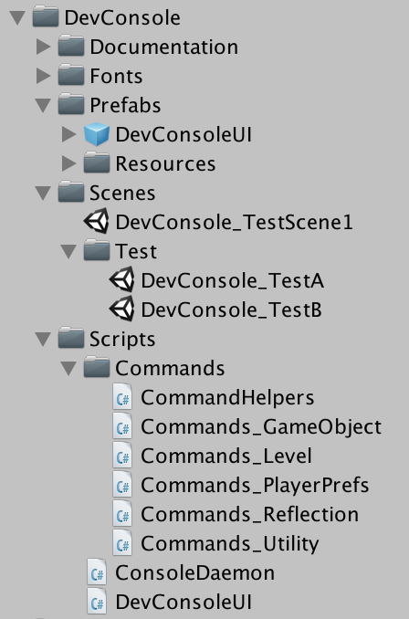
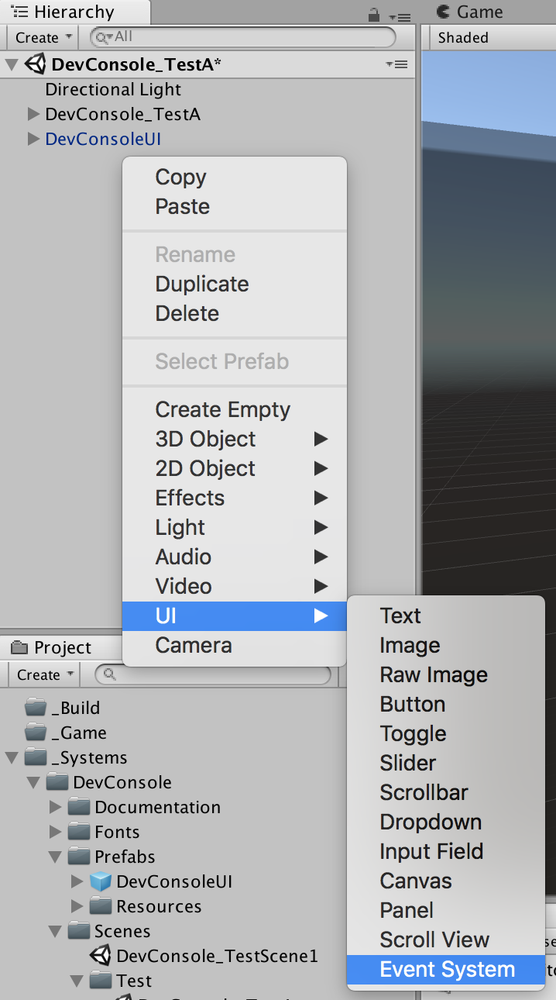
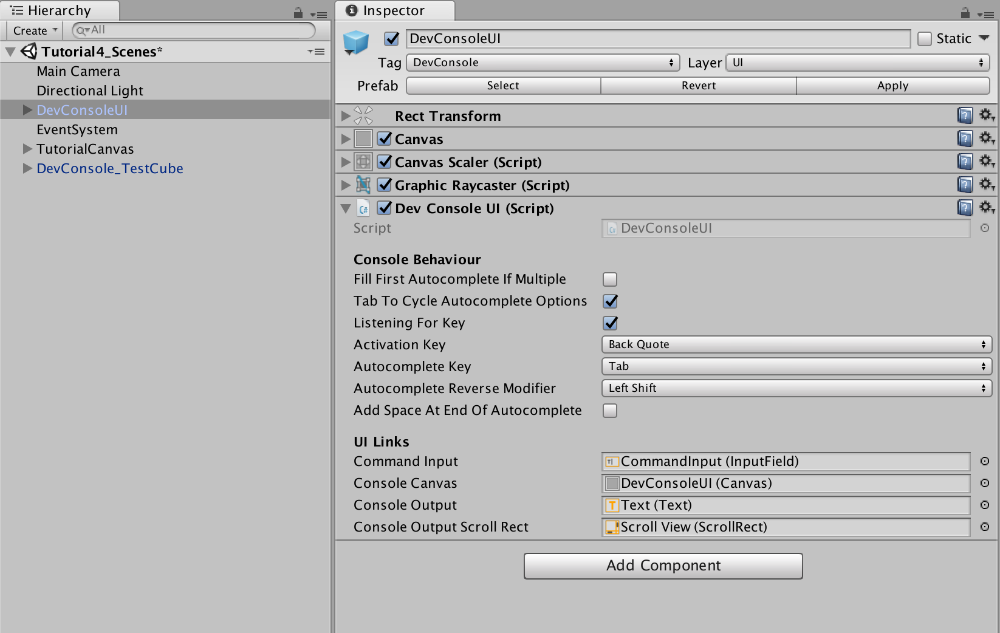
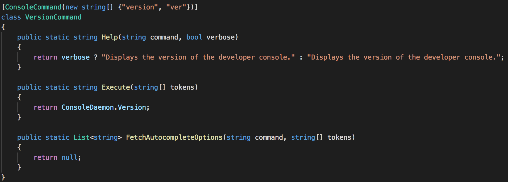

Developer Console Addon Documentation
Welcome to the documentation for the Developer Console! The index below has links to each individual section. Alternatively, you can scroll through and read the documentation in order.
Index
Please click on any of the links below to go directly to that section.
Overview
What actually is a 'Developer Console' I hear you ask? It's an extension for your game that lets you press a key while the game is running to bring up a window where you can type commands. These commands can modify or query objects in the scene, load or unload scenes, spawn objects, modify components etc. And that is without any custom commands!
You can easily add in your own custom commands (more on that here) that could enable different cheats for your game (eg. no clip, god mode etc). What those commands do is entirely within your control. The goal of the Developer Console is to make life easier for you.
What are the main features of the Developer Console:
- Over 20 built in commands allowing you to:
- Manipulate the positiong, rotation and scale of game objects
- Load and unload scenes
- Add, remove and toggle components on game objects
- Spawn objects based on prefabs
- Set, get and remove player preferences
- Set or get public variables or properties on components (not all variable types are supported)
- Set or get public static variables or properties on classes (not all variable types are supported)
- Execute public functions on components (only parameterless functions)
- Execute public static functions on classes (only parameterless functions)
- Take screenshots
- Smart autocompletion that knows what scenes are loaded, what components exist and what objects are in the scene
- Easy integration into existing or new projects
- Easy to add new commands
- Integrated help for all commands
- Full source code included
- Guided tutorials for the built in commands
In the following sections you'll see how to integrate the console to your project, how to customise the appearance of the console and how to add new commands.
Inside the Help folder you will find a Tutorials> folder that contains several scenes which will teach you the various commands built into the Developer Console. If you are new to the Developer Console it is recommended that you work through these scenes in order.
Return to the top
x
Adding the console to your project
This section will explain how to integrate the Developer Console with your Unity project. This section assumes that you have already imported the package for the console (either by installing through the Asset Store or by importing the package directly).
To add the console to your project you need to add the DevConsoleUI prefab to every scene that you wish to have the console available in.
- Find the DevConsoleUI prefab in the DevConsole folder as shown in the image below.

- Drag the Prefab into the hierarchy for any scene where you wish to be able to access the Developer Console.
- If you do not already have an Event System in the scene then add one into the hierarchy as shown in the image below.

- That's it! The Developer Console is now integrated into your scene.
Return to the top
Configuring the Developer Console UI
The Developer Console UI has a few configuration options that will change how it behaves. If you select the DevConsoleUI then you can see the available options in the inspector as shown in the image below.

Let's explore what each of these options does:
- Fit First Autocomplete if Multiple
- When you press tab to autocomplete there may be multiple possible options based on what you have typed so far.
- If this option is enabled (ie. checked) then the first of those options will be automatically filled in.
- If this option is diesabled (ie. unchecked) then what you have typed remains unchanged.
- Tab To Cycle Autocomplete Options
- If this is enabled (ie. checked) then pressing tab will cycle through available autocomplete options.
- Listening For Key
- If this is enabled (ie. checked) then the console will activate/deactivate in response to pressing the tilde (~) key.
- Activation Key
- This is the key which the Developer Console will listen for to activate/deactivate the console.
- Autocomplete Key
- This is the key that the Developer Console will listen for and when pressed will attempt to automatically complete what you have typed in.
- Autocomplete Reverse Modifier
- If you are pressing the Autocomplete key to move through the options then also pressing this key at the same time will move backwards (rather than forwards) through the options.
- Add Space At End Of Autocomplete
- When a command is autocompleted should a space automatically be added at the end.
Return to the top
Spawning Prefabs
For the Developer Console to find prefabs and spawn them the prefabs must be within a folder called Resources. You can have multiple Resources folders and you can have subfolders within them.
Return to the top
Adding a new console command
I've tried to make the process of adding new commands to the Developer Console as straightforward as possible. If we take a look at the image below we can see the help command. This is a good starting point as it is one of the simplest commands.

Each console command must be a separate class and the classes do not need to inherit from any other class. The four key things which must be setup to make a console command are:
- Setting the command name
- The command name is setup using an attribute. The attribute defines the primary name and any alternate names for the console command.
- The syntax for the attribute is [ConsoleCommand(new string[]{"primary name", "alt name 1", "alt name 2"})]
- Alternate names are not mandatory. You can provide as many alternate names as you desire.
- All command names must be unique.
- The attribute must go before the class declaration.
- Adding the help function
- The help function must return a string and takes in two parameters. The parameters indicate what command the user typed and if verbose or concise help should be displayed.
- Verbose help is used when the user types help followed by the command name. Concise help is used when listing all command.
- Adding the execute function
- The execute function performs the actual task and returns a string which will be output to the console.
- The parameters to the execute function are an array of tokens. The tokens are the additional parameters (if present) which the user entered.
- If your command fails then you should begin one of the lines of your return string with [Error] and the Developer Console will then automatically colour that line red.
- Adding the autocompletion function
- The autocomplete function returns a list of strings that indicate valid autocomplete options based on what the user has already entered.
- The parameters to the autocomplete function are the command name to be autocompleted and an array of the tokens (ie. other parameters already entered).
- If there are no valid options, or you do not wish to support autocomplete for this command, then simply return null.
Optionally, you can also dynamically control if a command is available or if it is shown in help and can be autocompleted.
For examples on creating your own commands check out the DemoCommands script in the Help/Demos folder.
Return to the top
Version History
- 1.2.1
- Added an event that triggers when the console is opened or closed with the new status
- (New input system only) The keyboard input (for other sources) can be turned off by default when open
- (New input system only)Fixed bug where enter did not submit console commands
- 1.2.0
- Updated and tested with Unity 2020.2.1
- Migrated over to Text Mesh Pro for all UI text
- Supports both the new and legacy input systems
- 1.1.0 - 10th January, 2020
- Updated and tested with Unity 2019.2.17
- Update UI to scale with screen size
- Add in examples of creating custom commands
- 1.0 - 9th December, 2017
- Version updated for full release
- 0.9.2 - 4th December, 2017
- Reorganised tutorials into the Help folder and removed redundant intro tutorial.
- Fixed incorrect case for scenes tutorial.
- Fixed help command not autocompleting when trying to retrieve verbose help.
- Add configuration option for adding a space at the end on autocomplete.
- Autocompleting partial game object paths now returns correct result.
- Add limits on screenshot resolution multiplier.
- Add support for modifier key (Defaults to shift) for moving back through autocomplete options.
- Autocomplete for game objects and components is now case-insensitive.
- Tutorials now provide feedback on if a command was entered incorrectly.
- 0.9.1 - 2nd December, 2017
- Added ability to change which keys are used to activate the Developer Console and to autocomplete commands.
- Added tutorial scenes that teach the commands built into the Developer Console.
- Fixed an exception if trying to autocomplete an invalid command.
- Fixed tab cycling through history rather than autocomplete options.
- Component listing now indicates the status of the components in the list.
- 0.9.0 - 26th November, 2017
Return to the top
Third Party Licenses
Anonymous Pro by Mark Simonson
The Developer Console includes and makes use of the Anonymous Pro font by Mark Simonson. Please review the license agreement in the Fonts folder.
Return to the top